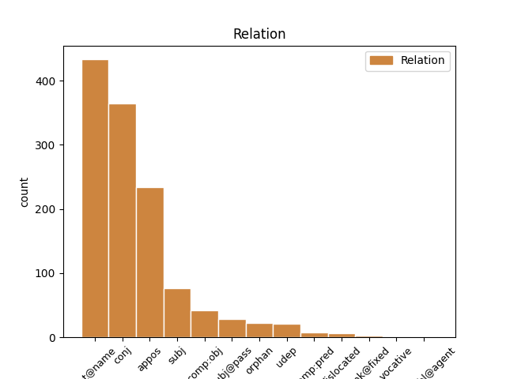
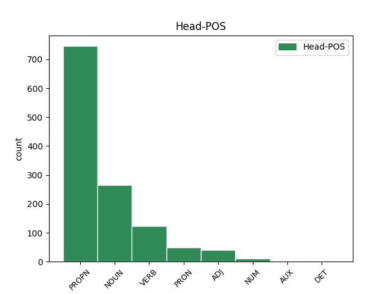
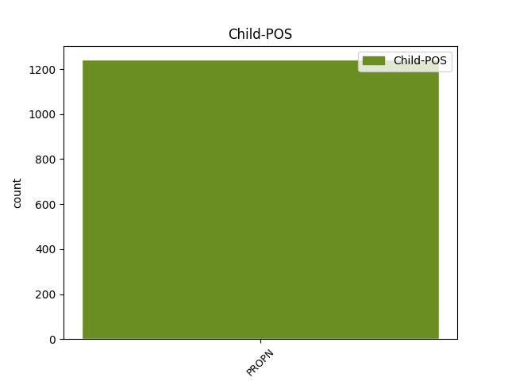

Distribution of features within this leaf



Agreement Rules sorted by frequency.
- When the dependent token is the flat multiword expression(flat@name) of the head token, and the dependent token is PROPN.
1 Uberior _ _ _ _ 0 _ _ _
2 oratio _ _ _ _ 0 _ _ _
3 L Lucius PROPN Ne Case=Gen|Gender=Masc|Number=Sing 0 _ _ _
4 Crassi Crassus PROPN Ne Case=Gen|Gender=Masc|Number=Sing 3 flat@name _ ref=1.133
5 ne _ _ _ _ 0 _ _ _
6 c _ _ _ _ 0 _ _ _
7 minus _ _ _ _ 0 _ _ _
8 faceta _ _ _ _ 0 _ _ _
9 sed _ _ _ _ 0 _ _ _
10 bene _ _ _ _ 0 _ _ _
11 loquendi _ _ _ _ 0 _ _ _
12 de _ _ _ _ 0 _ _ _
13 Catulis _ _ _ _ 0 _ _ _
14 opinio _ _ _ _ 0 _ _ _
15 non _ _ _ _ 0 _ _ _
16 minor _ _ _ _ 0 _ _ _
1 Sunt _ _ _ _ 0 _ _ _
2 his _ _ _ _ 0 _ _ _
3 alii _ _ _ _ 0 _ _ _
4 multum _ _ _ _ 0 _ _ _
5 dispares _ _ _ _ 0 _ _ _
6 simplices _ _ _ _ 0 _ _ _
7 et _ _ _ _ 0 _ _ _
8 aperti _ _ _ _ 0 _ _ _
9 qui _ _ _ _ 0 _ _ _
10 nihil _ _ _ _ 0 _ _ _
11 ex _ _ _ _ 0 _ _ _
12 occulto _ _ _ _ 0 _ _ _
13 nihil _ _ _ _ 0 _ _ _
14 de _ _ _ _ 0 _ _ _
15 insidiis _ _ _ _ 0 _ _ _
16 agendum _ _ _ _ 0 _ _ _
17 putant _ _ _ _ 0 _ _ _
18 veritatis _ _ _ _ 0 _ _ _
19 cultores _ _ _ _ 0 _ _ _
20 fraudis _ _ _ _ 0 _ _ _
21 inimici _ _ _ _ 0 _ _ _
22 item _ _ _ _ 0 _ _ _
23 que _ _ _ _ 0 _ _ _
24 alii _ _ _ _ 0 _ _ _
25 qui _ _ _ _ 0 _ _ _
26 quidvis _ _ _ _ 0 _ _ _
27 perpetiantur _ _ _ _ 0 _ _ _
28 cuivis _ _ _ _ 0 _ _ _
29 deserviant _ _ _ _ 0 _ _ _
30 dum _ _ _ _ 0 _ _ _
31 quod _ _ _ _ 0 _ _ _
32 velint _ _ _ _ 0 _ _ _
33 consequantur _ _ _ _ 0 _ _ _
34 ut _ _ _ _ 0 _ _ _
35 Sullam Sulla PROPN Ne Case=Acc|Gender=Masc|Number=Sing 0 _ _ _
36 et _ _ _ _ 0 _ _ _
37 Marcum Marcus PROPN Ne Case=Acc|Gender=Masc|Number=Sing 35 conj _ ref=1.109
38 Crassum _ _ _ _ 0 _ _ _
39 videbamus _ _ _ _ 0 _ _ _
1 at _ _ _ _ 0 _ _ _
2 isdem _ _ _ _ 0 _ _ _
3 temporibus _ _ _ _ 0 _ _ _
4 in _ _ _ _ 0 _ _ _
5 Marco _ _ _ _ 0 _ _ _
6 Scauro _ _ _ _ 0 _ _ _
7 et _ _ _ _ 0 _ _ _
8 in _ _ _ _ 0 _ _ _
9 Marco _ _ _ _ 0 _ _ _
10 Druso _ _ _ _ 0 _ _ _
11 adulescente _ _ _ _ 0 _ _ _
12 singularis _ _ _ _ 0 _ _ _
13 severitas _ _ _ _ 0 _ _ _
14 in _ _ _ _ 0 _ _ _
15 Gaio _ _ _ _ 0 _ _ _
16 Laelio _ _ _ _ 0 _ _ _
17 multa _ _ _ _ 0 _ _ _
18 hilaritas _ _ _ _ 0 _ _ _
19 in _ _ _ _ 0 _ _ _
20 eius _ _ _ _ 0 _ _ _
21 familiari familiaris NOUN Nb Case=Abl|Gender=Masc|Number=Sing 0 _ _ _
22 Scipione Scipio PROPN Ne Case=Abl|Gender=Masc|Number=Sing 21 appos _ ref=1.108
23 ambitio _ _ _ _ 0 _ _ _
24 maior _ _ _ _ 0 _ _ _
25 vita _ _ _ _ 0 _ _ _
26 tristior _ _ _ _ 0 _ _ _
1 Ex _ _ _ _ 0 _ _ _
2 quo _ _ _ _ 0 _ _ _
3 magis _ _ _ _ 0 _ _ _
4 emergit _ _ _ _ 0 _ _ _
5 quale _ _ _ _ 0 _ _ _
6 sit _ _ _ _ 0 _ _ _
7 decorum _ _ _ _ 0 _ _ _
8 illud _ _ _ _ 0 _ _ _
9 ideo _ _ _ _ 0 _ _ _
10 quia _ _ _ _ 0 _ _ _
11 nihil _ _ _ _ 0 _ _ _
12 decet _ _ _ _ 0 _ _ _
13 invita invitus ADJ A- Case=Abl|Degree=Pos|Gender=Fem|Number=Sing 0 _ _ _
14 Minerva Minerva PROPN Ne Case=Abl|Gender=Fem|Number=Sing 13 subj _ ref=1.110
15 ut _ _ _ _ 0 _ _ _
16 aiunt _ _ _ _ 0 _ _ _
17 id _ _ _ _ 0 _ _ _
18 est _ _ _ _ 0 _ _ _
19 adversante _ _ _ _ 0 _ _ _
20 et _ _ _ _ 0 _ _ _
21 repugnante _ _ _ _ 0 _ _ _
22 natura _ _ _ _ 0 _ _ _
1 Quamquam _ _ _ _ 0 _ _ _
2 te _ _ _ _ 0 _ _ _
3 Marce _ _ _ _ 0 _ _ _
4 fili _ _ _ _ 0 _ _ _
5 annum _ _ _ _ 0 _ _ _
6 iam _ _ _ _ 0 _ _ _
7 audientem audio VERB V- Case=Acc|Gender=Masc|Number=Sing|Tense=Pres|VerbForm=Part|Voice=Act 0 _ _ _
8 Cratippum Cratippus PROPN Ne Case=Acc|Gender=Masc|Number=Sing 7 comp:obj _ ref=1.1
9 id _ _ _ _ 0 _ _ _
10 que _ _ _ _ 0 _ _ _
11 Athenis _ _ _ _ 0 _ _ _
12 abundare _ _ _ _ 0 _ _ _
13 oportet _ _ _ _ 0 _ _ _
14 praeceptis _ _ _ _ 0 _ _ _
15 institutis _ _ _ _ 0 _ _ _
16 que _ _ _ _ 0 _ _ _
17 philosophiae _ _ _ _ 0 _ _ _
18 propter _ _ _ _ 0 _ _ _
19 summam _ _ _ _ 0 _ _ _
20 et _ _ _ _ 0 _ _ _
21 doctoris _ _ _ _ 0 _ _ _
22 auctoritatem _ _ _ _ 0 _ _ _
23 et _ _ _ _ 0 _ _ _
24 urbis _ _ _ _ 0 _ _ _
25 quorum _ _ _ _ 0 _ _ _
26 alter _ _ _ _ 0 _ _ _
27 te _ _ _ _ 0 _ _ _
28 scientia _ _ _ _ 0 _ _ _
29 augere _ _ _ _ 0 _ _ _
30 potest _ _ _ _ 0 _ _ _
31 altera _ _ _ _ 0 _ _ _
32 exemplis _ _ _ _ 0 _ _ _
33 tamen _ _ _ _ 0 _ _ _
34 ut _ _ _ _ 0 _ _ _
35 ipse _ _ _ _ 0 _ _ _
36 ad _ _ _ _ 0 _ _ _
37 meam _ _ _ _ 0 _ _ _
38 utilitatem _ _ _ _ 0 _ _ _
39 semper _ _ _ _ 0 _ _ _
40 cum _ _ _ _ 0 _ _ _
41 Graecis _ _ _ _ 0 _ _ _
42 Latina _ _ _ _ 0 _ _ _
43 coniunxi _ _ _ _ 0 _ _ _
44 ne _ _ _ _ 0 _ _ _
45 que _ _ _ _ 0 _ _ _
46 id _ _ _ _ 0 _ _ _
47 in _ _ _ _ 0 _ _ _
48 philosophia _ _ _ _ 0 _ _ _
49 solum _ _ _ _ 0 _ _ _
50 sed _ _ _ _ 0 _ _ _
51 etiam _ _ _ _ 0 _ _ _
52 in _ _ _ _ 0 _ _ _
53 dicendi _ _ _ _ 0 _ _ _
54 exercitatione _ _ _ _ 0 _ _ _
55 feci _ _ _ _ 0 _ _ _
56 idem _ _ _ _ 0 _ _ _
57 tibi _ _ _ _ 0 _ _ _
58 censeo _ _ _ _ 0 _ _ _
59 faciendum _ _ _ _ 0 _ _ _
60 ut _ _ _ _ 0 _ _ _
61 par _ _ _ _ 0 _ _ _
62 sis _ _ _ _ 0 _ _ _
63 in _ _ _ _ 0 _ _ _
64 utriusque _ _ _ _ 0 _ _ _
65 orationis _ _ _ _ 0 _ _ _
66 facultate _ _ _ _ 0 _ _ _
1 Panaetius _ _ _ _ 0 _ _ _
2 quidem _ _ _ _ 0 _ _ _
3 Africanum Africanus PROPN Ne Case=Acc|Gender=Masc|Number=Sing 8 subj@pass _ ref=1.90
4 auditorem _ _ _ _ 0 _ _ _
5 et _ _ _ _ 0 _ _ _
6 familiarem _ _ _ _ 0 _ _ _
7 suum _ _ _ _ 0 _ _ _
8 solitum soleo VERB V- Aspect=Perf|Case=Acc|Gender=Masc|Number=Sing|Tense=Past|VerbForm=Part|Voice=Pass 0 _ _ _
9 ait _ _ _ _ 0 _ _ _
10 dicere _ _ _ _ 0 _ _ _
11 ut _ _ _ _ 0 _ _ _
12 equos _ _ _ _ 0 _ _ _
13 propter _ _ _ _ 0 _ _ _
14 crebras _ _ _ _ 0 _ _ _
15 contentiones _ _ _ _ 0 _ _ _
16 proeliorum _ _ _ _ 0 _ _ _
17 ferocitate _ _ _ _ 0 _ _ _
18 exsultantes _ _ _ _ 0 _ _ _
19 domitoribus _ _ _ _ 0 _ _ _
20 tradere _ _ _ _ 0 _ _ _
21 soleant _ _ _ _ 0 _ _ _
22 ut _ _ _ _ 0 _ _ _
23 iis _ _ _ _ 0 _ _ _
24 facilioribus _ _ _ _ 0 _ _ _
25 possint _ _ _ _ 0 _ _ _
26 uti _ _ _ _ 0 _ _ _
27 sic _ _ _ _ 0 _ _ _
28 homines _ _ _ _ 0 _ _ _
29 secundis _ _ _ _ 0 _ _ _
30 rebus _ _ _ _ 0 _ _ _
31 effrenatos _ _ _ _ 0 _ _ _
32 sibi _ _ _ _ 0 _ _ _
33 que _ _ _ _ 0 _ _ _
34 praefidentes _ _ _ _ 0 _ _ _
35 tamquam _ _ _ _ 0 _ _ _
36 in _ _ _ _ 0 _ _ _
37 gyrum _ _ _ _ 0 _ _ _
38 rationis _ _ _ _ 0 _ _ _
39 et _ _ _ _ 0 _ _ _
40 doctrinae _ _ _ _ 0 _ _ _
41 duci _ _ _ _ 0 _ _ _
42 oportere _ _ _ _ 0 _ _ _
43 ut _ _ _ _ 0 _ _ _
44 perspicerent _ _ _ _ 0 _ _ _
45 rerum _ _ _ _ 0 _ _ _
46 humanarum _ _ _ _ 0 _ _ _
47 imbecillitatem _ _ _ _ 0 _ _ _
48 varietatem _ _ _ _ 0 _ _ _
49 que _ _ _ _ 0 _ _ _
50 fortunae _ _ _ _ 0 _ _ _
1 omnis _ _ _ _ 0 _ _ _
2 fere _ _ _ _ 0 _ _ _
3 quas _ _ _ _ 0 _ _ _
4 commemoras _ _ _ _ 0 _ _ _
5 praeter _ _ _ _ 0 _ _ _
6 eas _ _ _ _ 0 _ _ _
7 quas _ _ _ _ 0 _ _ _
8 scribis _ _ _ _ 0 _ _ _
9 Lentuli _ _ _ _ 0 _ _ _
10 pueris _ _ _ _ 0 _ _ _
11 et _ _ _ _ 0 _ _ _
12 Equotutico Equotuticus PROPN Ne Case=Abl|Gender=Fem|Number=Sing 15 udep _ ref=6.1.1
13 et _ _ _ _ 0 _ _ _
14 Brundisio _ _ _ _ 0 _ _ _
15 datas do VERB V- Aspect=Perf|Case=Acc|Gender=Fem|Number=Plur|Tense=Past|VerbForm=Part|Voice=Pass 0 _ _ _
1 de _ _ _ _ 0 _ _ _
2 me _ _ _ _ 0 _ _ _
3 imperatore _ _ _ _ 0 _ _ _
4 scribis _ _ _ _ 0 _ _ _
5 te _ _ _ _ 0 _ _ _
6 ex _ _ _ _ 0 _ _ _
7 Philotimi _ _ _ _ 0 _ _ _
8 litteris _ _ _ _ 0 _ _ _
9 cognosse _ _ _ _ 0 _ _ _
10 sed _ _ _ _ 0 _ _ _
11 credo _ _ _ _ 0 _ _ _
12 te _ _ _ _ 0 _ _ _
13 iam _ _ _ _ 0 _ _ _
14 in _ _ _ _ 0 _ _ _
15 Epiro _ _ _ _ 0 _ _ _
16 cum _ _ _ _ 0 _ _ _
17 esses _ _ _ _ 0 _ _ _
18 binas _ _ _ _ 0 _ _ _
19 meas _ _ _ _ 0 _ _ _
20 de _ _ _ _ 0 _ _ _
21 omnibus _ _ _ _ 0 _ _ _
22 rebus _ _ _ _ 0 _ _ _
23 accepisse _ _ _ _ 0 _ _ _
24 unas _ _ _ _ 0 _ _ _
25 a _ _ _ _ 0 _ _ _
26 Pindenisso _ _ _ _ 0 _ _ _
27 capto _ _ _ _ 0 _ _ _
28 alteras alter ADJ A- Case=Acc|Degree=Pos|Gender=Fem|Number=Plur 0 _ _ _
29 Laodicea Laodicea PROPN Ne Case=Abl|Gender=Fem|Number=Sing 28 orphan _ ref=6.1.9
30 utrasque _ _ _ _ 0 _ _ _
31 tuis _ _ _ _ 0 _ _ _
32 pueris _ _ _ _ 0 _ _ _
33 datas _ _ _ _ 0 _ _ _
1 Huius _ _ _ _ 0 _ _ _
2 Hercyniae Hercynia PROPN Ne Case=Gen|Gender=Fem|Number=Plur 8 dislocated _ ref=6.25.1
3 silvae _ _ _ _ 0 _ _ _
4 quae _ _ _ _ 0 _ _ _
5 supra _ _ _ _ 0 _ _ _
6 demonstrata _ _ _ _ 0 _ _ _
7 est _ _ _ _ 0 _ _ _
8 latitudo latitudo NOUN Nb Case=Nom|Gender=Fem|Number=Sing 0 _ _ _
9 novem _ _ _ _ 0 _ _ _
10 dierum _ _ _ _ 0 _ _ _
11 iter _ _ _ _ 0 _ _ _
12 expedito _ _ _ _ 0 _ _ _
13 patet _ _ _ _ 0 _ _ _
1 Mihi ego PRON Pp Case=Dat|Gender=Masc|Number=Sing|Person=1|PronType=Prs 0 _ _ _
2 quidem _ _ _ _ 0 _ _ _
3 ne _ _ _ _ 0 _ _ _
4 que _ _ _ _ 0 _ _ _
5 pueris _ _ _ _ 0 _ _ _
6 nobis _ _ _ _ 0 _ _ _
7 Marcus _ _ _ _ 0 _ _ _
8 Scaurus _ _ _ _ 0 _ _ _
9 Gaio Gaius PROPN Ne Case=Dat|Gender=Masc|Number=Sing 1 comp:pred _ ref=1.76
10 Mario _ _ _ _ 0 _ _ _
11 ne _ _ _ _ 0 _ _ _
12 que _ _ _ _ 0 _ _ _
13 cum _ _ _ _ 0 _ _ _
14 versaremur _ _ _ _ 0 _ _ _
15 in _ _ _ _ 0 _ _ _
16 re _ _ _ _ 0 _ _ _
17 publica _ _ _ _ 0 _ _ _
18 Quintus _ _ _ _ 0 _ _ _
19 Catulus _ _ _ _ 0 _ _ _
20 Gnaeo _ _ _ _ 0 _ _ _
21 Pompeio _ _ _ _ 0 _ _ _
22 cedere _ _ _ _ 0 _ _ _
23 videbatur _ _ _ _ 0 _ _ _
1 vixi _ _ _ _ 0 _ _ _
2 cum _ _ _ _ 0 _ _ _
3 Axio _ _ _ _ 0 _ _ _
4 qui _ _ _ _ 0 _ _ _
5 etiam _ _ _ _ 0 _ _ _
6 me _ _ _ _ 0 _ _ _
7 ad _ _ _ _ 0 _ _ _
8 Septem Septem PROPN Ne Case=Acc|Gender=Fem|Number=Plur 0 _ _ _
9 Aquas Aquae PROPN Ne Case=Acc|Gender=Fem|Number=Plur 8 unk@fixed _ ref=4.15.5
10 duxit _ _ _ _ 0 _ _ _
Disagree Examples:
1 audiens _ _ _ _ 0 _ _ _
2 autem _ _ _ _ 0 _ _ _
3 Herodes _ _ _ _ 0 _ _ _
4 rex _ _ _ _ 0 _ _ _
5 turbatus turbo VERB V- Aspect=Perf|Case=Nom|Gender=Masc|Number=Sing|Tense=Past|VerbForm=Part|Voice=Pass 0 _ _ _
6 est _ _ _ _ 0 _ _ _
7 et _ _ _ _ 0 _ _ _
8 omnis _ _ _ _ 0 _ _ _
9 Hierosolyma Hierosolyma PROPN Ne Case=Nom|Gender=Fem|Number=Sing 5 conj _ ref=MATT_2.3
10 cum _ _ _ _ 0 _ _ _
11 illo _ _ _ _ 0 _ _ _
1 et _ _ _ _ 0 _ _ _
2 secutae _ _ _ _ 0 _ _ _
3 sunt _ _ _ _ 0 _ _ _
4 eum _ _ _ _ 0 _ _ _
5 turbae _ _ _ _ 0 _ _ _
6 multae _ _ _ _ 0 _ _ _
7 de _ _ _ _ 0 _ _ _
8 Galilaea _ _ _ _ 0 _ _ _
9 et _ _ _ _ 0 _ _ _
10 Decapoli Decapolis PROPN Ne Case=Abl|Gender=Fem|Number=Sing 0 _ _ _
11 et _ _ _ _ 0 _ _ _
12 Hierosolymis Hierosolyma PROPN Ne Case=Abl|Gender=Neut|Number=Plur 10 conj _ ref=MATT_4.25
13 et _ _ _ _ 0 _ _ _
14 Iudaea _ _ _ _ 0 _ _ _
15 et _ _ _ _ 0 _ _ _
16 de _ _ _ _ 0 _ _ _
17 trans _ _ _ _ 0 _ _ _
18 Iordanen _ _ _ _ 0 _ _ _
1 et _ _ _ _ 0 _ _ _
2 secutae _ _ _ _ 0 _ _ _
3 sunt _ _ _ _ 0 _ _ _
4 eum _ _ _ _ 0 _ _ _
5 turbae _ _ _ _ 0 _ _ _
6 multae _ _ _ _ 0 _ _ _
7 de _ _ _ _ 0 _ _ _
8 Galilaea _ _ _ _ 0 _ _ _
9 et _ _ _ _ 0 _ _ _
10 Decapoli _ _ _ _ 0 _ _ _
11 et _ _ _ _ 0 _ _ _
12 Hierosolymis Hierosolyma PROPN Ne Case=Abl|Gender=Neut|Number=Plur 0 _ _ _
13 et _ _ _ _ 0 _ _ _
14 Iudaea Iudaea PROPN Ne Case=Abl|Gender=Fem|Number=Sing 12 conj _ ref=MATT_4.25
15 et _ _ _ _ 0 _ _ _
16 de _ _ _ _ 0 _ _ _
17 trans _ _ _ _ 0 _ _ _
18 Iordanen _ _ _ _ 0 _ _ _
1 quia _ _ _ _ 0 _ _ _
2 si _ _ _ _ 0 _ _ _
3 in _ _ _ _ 0 _ _ _
4 Tyro Tyros PROPN Ne Case=Abl|Gender=Fem|Number=Sing 0 _ _ _
5 et _ _ _ _ 0 _ _ _
6 Sidone Sidon PROPN Ne Case=Abl|Gender=Masc|Number=Sing 4 conj _ ref=MATT_11.21
7 factae _ _ _ _ 0 _ _ _
8 essent _ _ _ _ 0 _ _ _
9 virtutes _ _ _ _ 0 _ _ _
10 quae _ _ _ _ 0 _ _ _
11 factae _ _ _ _ 0 _ _ _
12 sunt _ _ _ _ 0 _ _ _
13 in _ _ _ _ 0 _ _ _
14 vobis _ _ _ _ 0 _ _ _
15 olim _ _ _ _ 0 _ _ _
16 in _ _ _ _ 0 _ _ _
17 cilicio _ _ _ _ 0 _ _ _
18 et _ _ _ _ 0 _ _ _
19 cinere _ _ _ _ 0 _ _ _
20 paenitentiam _ _ _ _ 0 _ _ _
21 egissent _ _ _ _ 0 _ _ _
1 Tyro Tyros PROPN Ne Case=Dat|Gender=Fem|Number=Sing 0 _ _ _
2 et _ _ _ _ 0 _ _ _
3 Sidoni Sidon PROPN Ne Case=Dat|Gender=Masc|Number=Sing 1 conj _ ref=MATT_11.22
4 remissius _ _ _ _ 0 _ _ _
5 erit _ _ _ _ 0 _ _ _
6 in _ _ _ _ 0 _ _ _
7 die _ _ _ _ 0 _ _ _
8 iudicii _ _ _ _ 0 _ _ _
9 quam _ _ _ _ 0 _ _ _
10 vobis _ _ _ _ 0 _ _ _